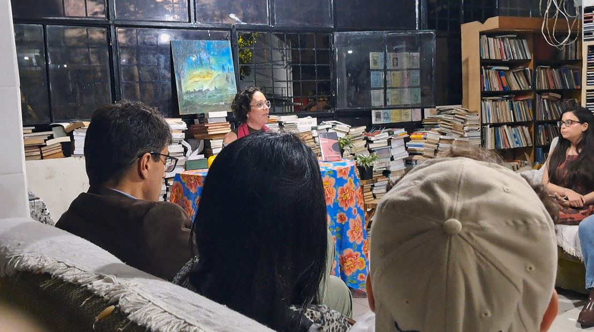
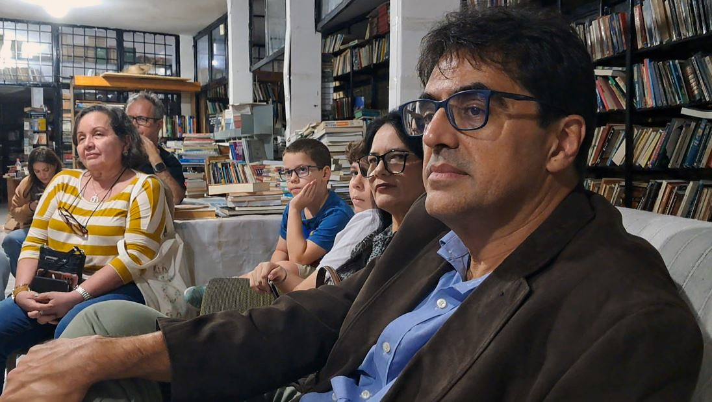
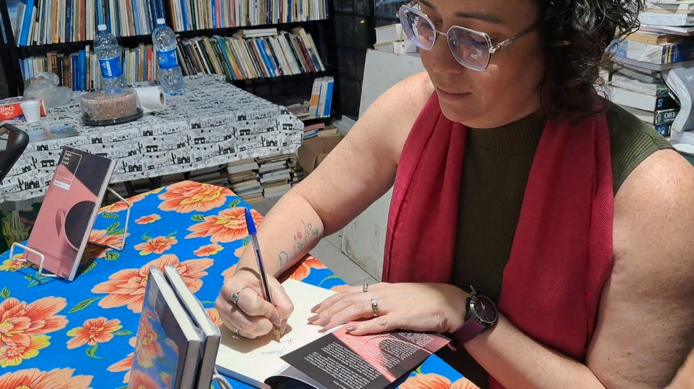

A escritora Nélida Campos lançou, em Campina Grande, O Que Falta é Café , seu terceiro livro. O encontro aconteceu no Sebo O Cata-Livros , na Praça Clementino Procópio, e reuniu leitores, familiares, amigos e integrantes do meio literário da cidade.
A obra reúne contos construídos a partir de histórias ouvidas e acontecimentos observados pela autora. Nélida conta que passou a guardar essas situações e depois as levou para a ficção. Entre narrativas bem-humoradas e outras de suspense, um elemento reaparece em todos os textos: o café.
“Em todos os textos o café é o protagonista. Tem histórias engraçadas de amigas, tem umas histórias de suspense, mas o café está incluído em tudo.”
A escolha, segundo Nélida, acompanha algo presente nas relações cotidianas: o café como pretexto para encontros e conversas — o convite para sentar, encontrar uma amiga e compartilhar histórias.

O Que Falta é Café amplia uma trajetória que começou com o infantil As aventuras de Pepeu e Rafa , publicado pela Editora Flamingo em 2023, e prosseguiu com Dançando na chuva: A arte de celebrar nas tempestades , lançado pela Editora A União em 2025 e escrito em parceria com Tatiana Cunha. Formada em Letras e Pedagogia e especialista em Psicopedagogia, Nélida chega agora ao seu terceiro livro pelo território dos contos.
O novo trabalho chegou à publicação depois de ser selecionado em uma chamada de uma editora de São Paulo. Nélida recorda a satisfação com a seleção e com a possibilidade de transformar em livro o conjunto de narrativas que vinha construindo. Eduardo Augusto, marido da autora, acompanhou de perto esse percurso desde o livro anterior. Em seu depoimento, destacou especialmente a evolução que percebeu na escrita de Nélida e a maior desenvoltura da autora na construção dos contos.

O encontro contou ainda com a presença de integrantes da Academia de Letras de Campina Grande , entre eles seu presidente, Thélio Farias , Ronaldo de Andrade , proprietário do Sebo O Cata-Livros, o professor José Mario , da UFCG, e a escritora Mirtes Sulpino .

Mirtes Sulpino relacionou a publicação a um movimento mais amplo da produção literária feminina no estado:
“Essa conquista é uma conquista coletiva. Hoje, nós enquanto escritoras, estamos ocupando vários espaços, sejam nas livrarias, sejam nas escolas, nas festas literárias.”
Mirtes destacou ainda a presença de escritoras em diferentes regiões da Paraíba, “do litoral ao sertão”, e convidou o público a conhecer os contos de Nélida.
Entre os amigos da autora estava também a professora de Letras Josenilda , que recordou em seu depoimento um episódio envolvendo André, amigo em comum por meio de quem conheceu Nélida. Ao falar dessa convivência, Josenilda relembrou momentos vividos durante o período de adoecimento de André e a aproximação que manteve com Nélida a partir dessa experiência.
Para Ronaldo de Andrade , proprietário do Sebo O Cata-Livros, receber lançamentos como o de Nélida é parte do trabalho de aproximação entre escritores e leitores. Em seu depoimento, ele ressaltou a importância dessas atividades tanto para os autores quanto para o público e o estímulo que a presença das pessoas representa para a continuidade das ações promovidas pelo sebo.